Brands That Care About Straps: Autodromo
When you hear the name Autodromo, your mind probably jumps straight to motoring watches with dashboard-gauge dials. But spend a few minutes on their site, and you will quickly realize that the watches are only half of the story. The straps are right there with them, designed with the same level of obsession over details. Let's take a closer look at why Autodromo deserves a spot in this series.
 Nenad Pantelic • May 21, 2026
Nenad Pantelic • May 21, 2026
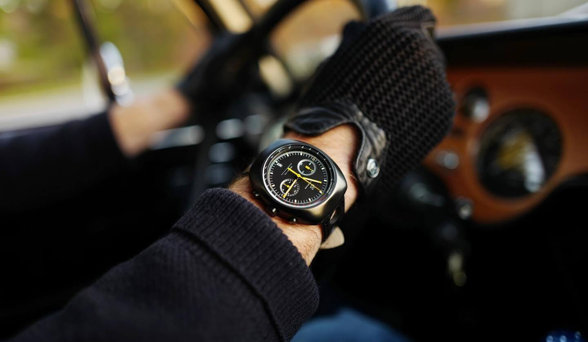
"Brands That Care" is a series of articles about watch companies that pay close attention to their straps. Choosing a strap should be more than just checking a box. There is a significant difference between a brand that treats a strap as a generic afterthought, and one that views it as an integral part of the design.
To the brands that care about straps - hats off to you.
Autodromo
Autodromo was founded in 2011 by Bradley Price, an industrial designer based in New York City. The origin story is now well-known in enthusiast circles. Bradley was driving his Alfa Romeo GTV6 through the Hudson Valley when he caught himself fascinated by the typography on the tachometer. That night, he started sketching concepts for a watch dial.
Zach Weiss from Worn & Wound did a cool interview with Bradley that's well worth a watch if you'd like to learn more about the history or the brand.
Today, Autodromo is much more than just a watch company. It is a complete automotive lifestyle brand, with driving gloves, eyewear, apparel, and a range of accessories. But what really separates Autodromo is the way every product is filtered through Bradley's sensibility.
Nothing on their website looks like it was generated from a spec sheet. Each piece feels like it has been considered, drawn, redrawn, and finally released only when every detail clicked into place. Almost everything they do feels new, innovative and fresh. Super rare to see today. Of course, this same level of care extends to the straps. Let's explore why.
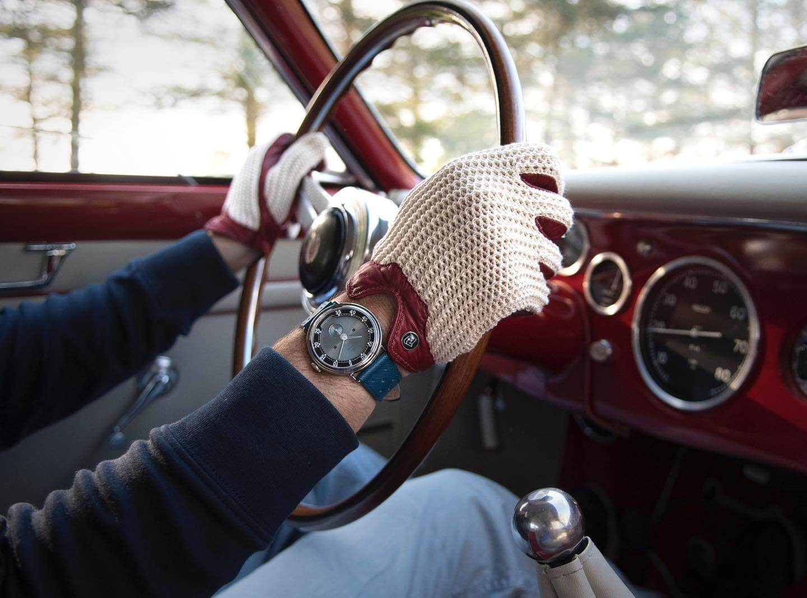
What does Autodromo do well?
In my opinion, Autodromo's success in the strap segment comes down to three key principles:
- Innovative designs
- Use of color
- Storytelling
Innovative designs
This is the principle I want to highlight first because I cannot think of many brands that approach strap design with the same level of creative ambition.
As I wrote above, there is not a single product you would say you've seen before. On the contrary, most of their stuff looks original.
Take the Monoposto strap. It is a chunky, hand-tooled bridle leather strap with a polished roller buckle, directly inspired by the hood straps that were once used to tie down the bonnets of grand prix race cars at high speed. You will not find something like that anywhere else.
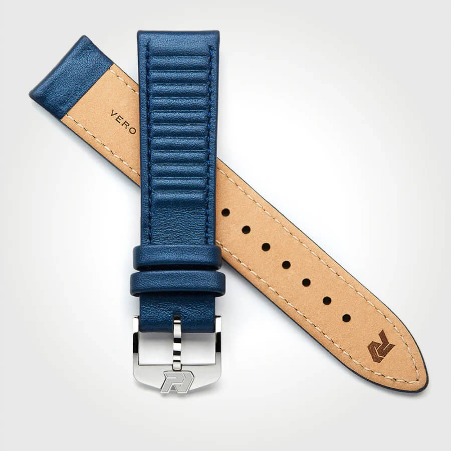
Then there is the Stradale ribbed leather strap. The ribbing pattern was created to evoke the pleated leather seats of a 1950s Italian sports berlinetta. Again, completely original. You can pair it with the Stradale watch, of course, but it also works as a unique option for any chrono in your collection with 18mm lugs (now available in 20mm as well).
And then the rally straps, with their perforations. They reach back to the 1960s practice of drivers cutting holes in their leather watch straps to keep their wrists cool during long, sweaty stages.
I really appreciate when a brand commits to original strap design. Sourcing a generic calfskin from a catalog is easy. Designing a proprietary strap that is recognizably yours, that takes courage and a lot of work.
Man, Bradley even innovated the pass-through nylon strap. That angular, ladder-style buckle is still one of my favorite NATO buckles ever. Love it!
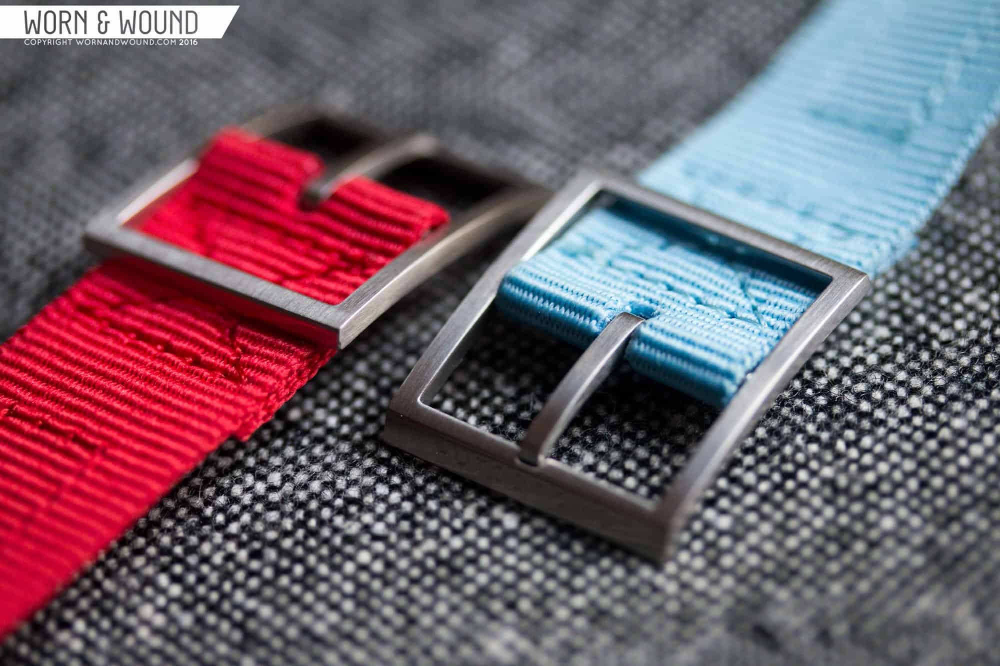
Use of color
This is where Autodromo really has fun.
Most watch brands at this price point play it safe with colors. You get black, brown, and maybe a navy if you are lucky. Autodromo goes further. The straps are bold, but not loud.
Mustard. Pumpkin. Verde. Burgundy. Tobacco. Olive. Moss Green. Metallic blue. These are not safe choices. These are colors that take inspiration from racing liveries, dashboard tones, and the unapologetic palettes of the 1960s and 1970s.
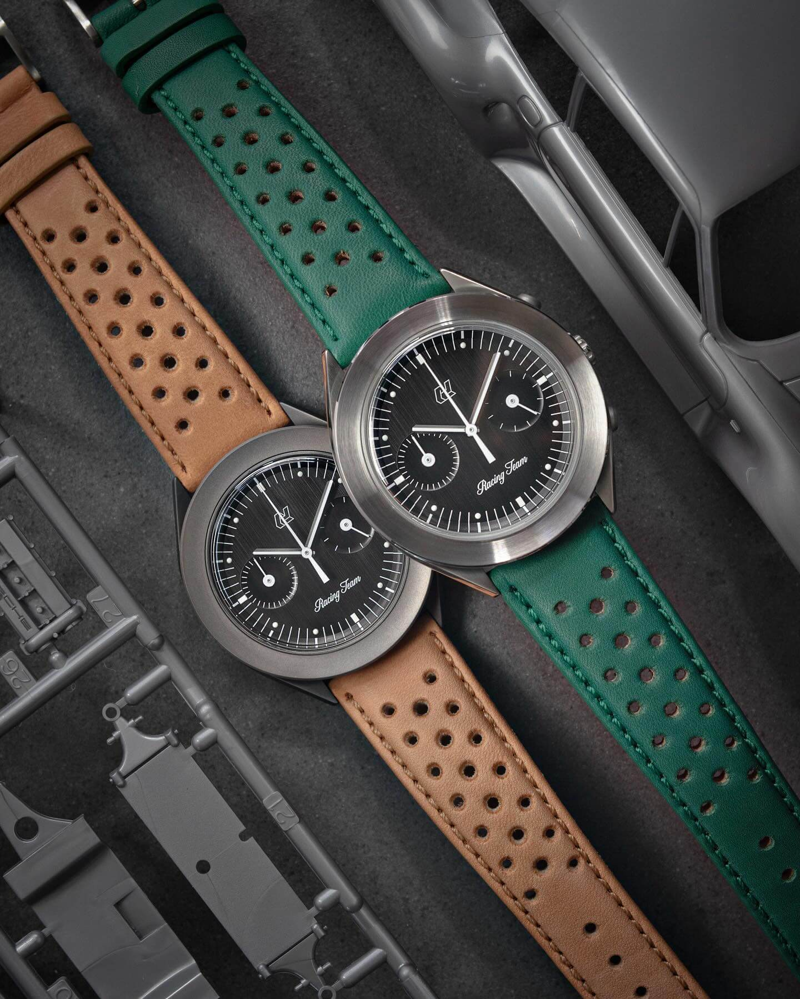
What I love is that the colors are never random. The mustard Saffiano strap is a direct visual conversation with the cream and red accents on the Intereuropa dial. The Moss Green is a tribute to Sir Stirling Moss and the silver-green Aston Martin DBR1 that won the Nürburgring 1000km. Every color has a reason to exist, and that's what makes the lineup feel curated, rather than thrown together.
It also means that buying an Autodromo watch isn't a one-and-done event. Pick up a watch and a couple of extra straps, and you have three or four completely different moods.
Storytelling
This is the core principle that connects everything together.
Every strap from Autodromo is telling a story from automotive history. The Monoposto strap tells the story of bonnet straps on grand prix cars. The Stradale strap tells the story of vintage Italian car interiors. The rally straps with their perforations tell the story of racing drivers in the golden era of road rallying.
Even the materials carry their own narratives. The Saffiano leather was originally patented by Prada in 1913 to create scratch-resistant calfskin for luggage. Autodromo did not just choose it because it looks nice. They chose it because it has the same dual-purpose character as the watches it is paired with.
This is the kind of detail that you can only get when an industrial designer is in charge of the creative work. Bradley Price clearly does not see straps as accessories. He sees them as another canvas for the same story he is telling with the watch case, the dial, the gauges, and even the packaging.
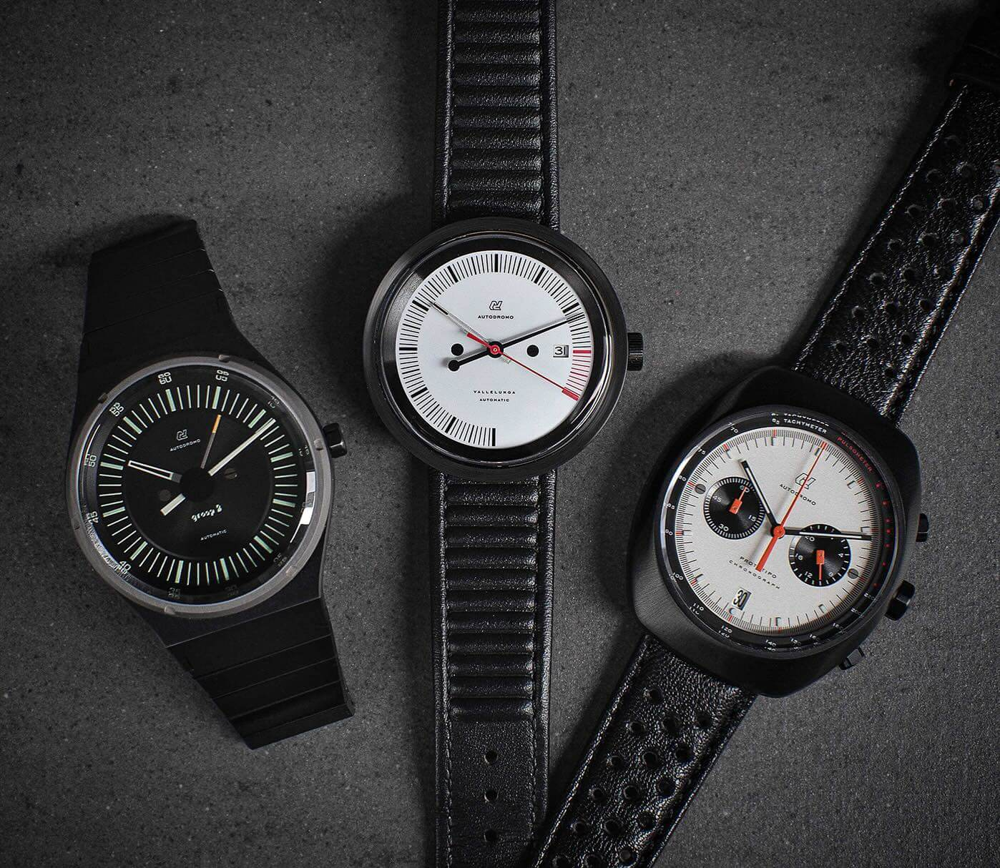
Examples
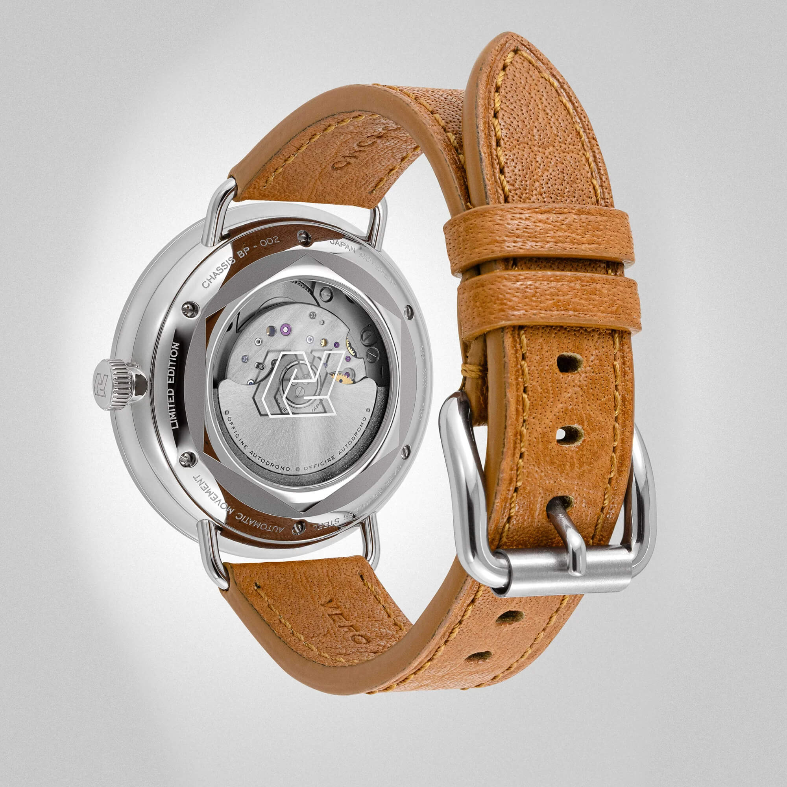
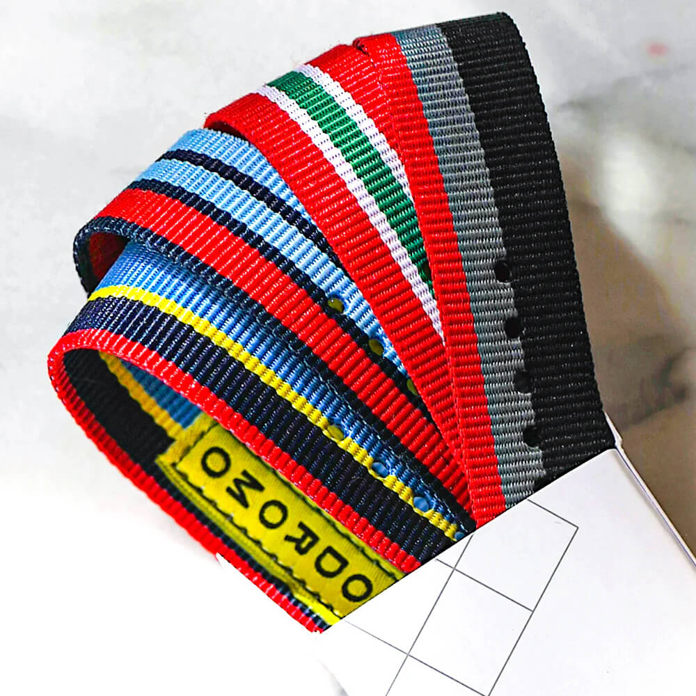
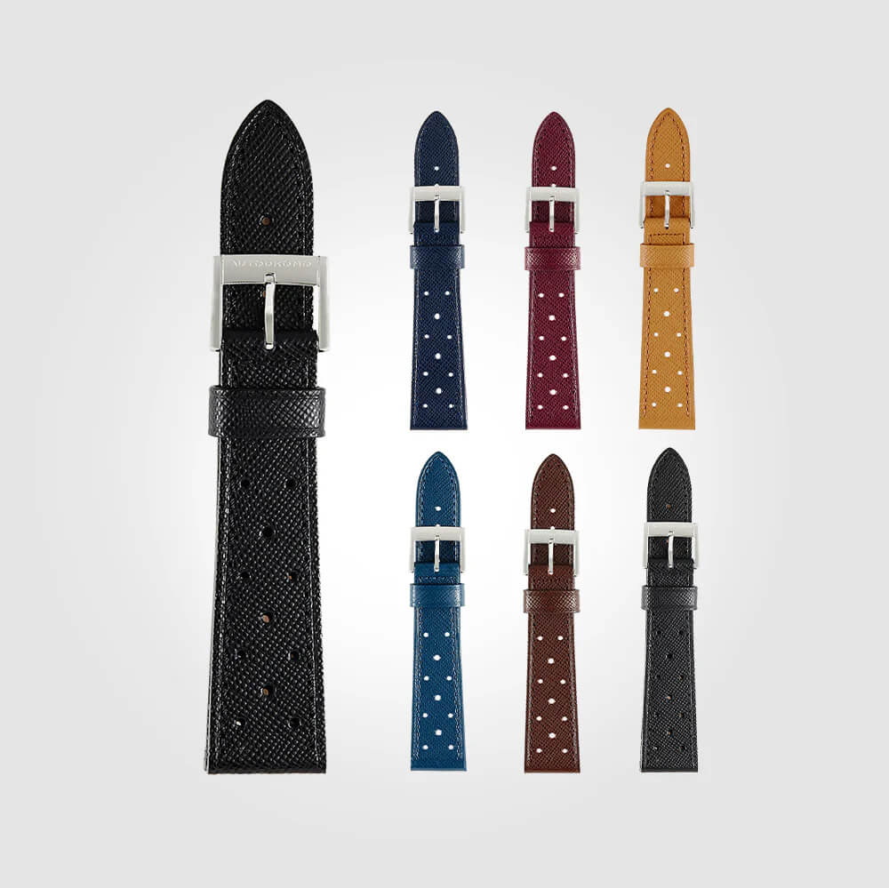
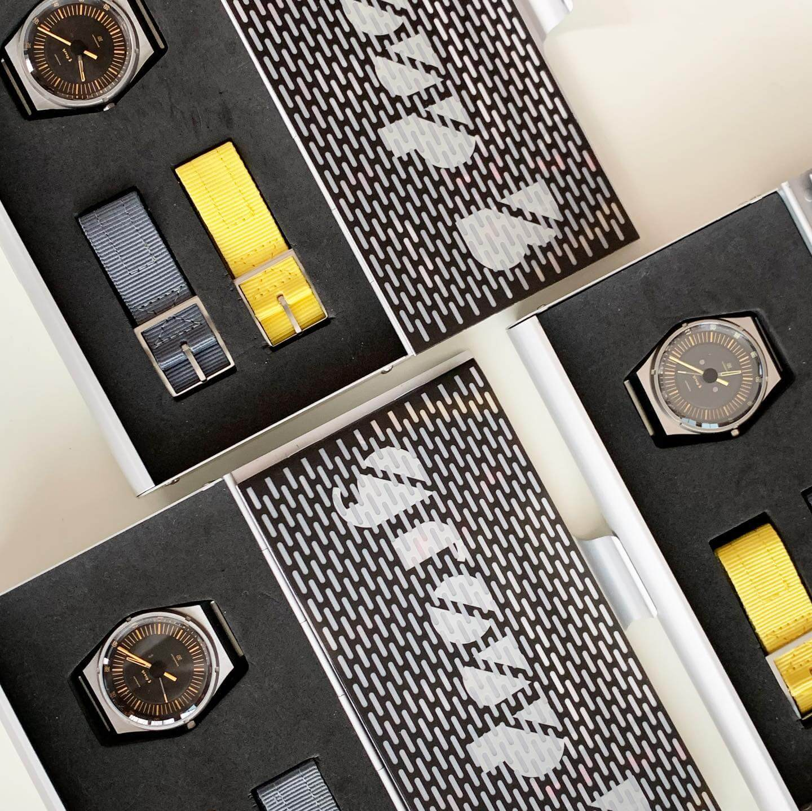
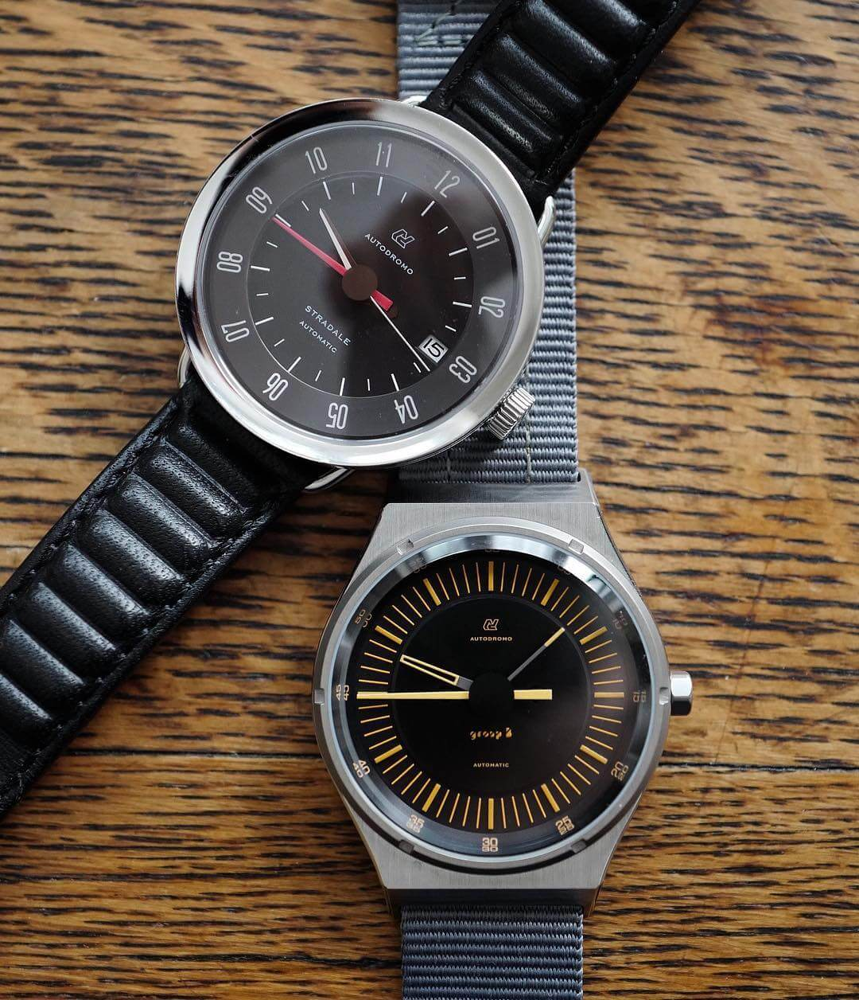
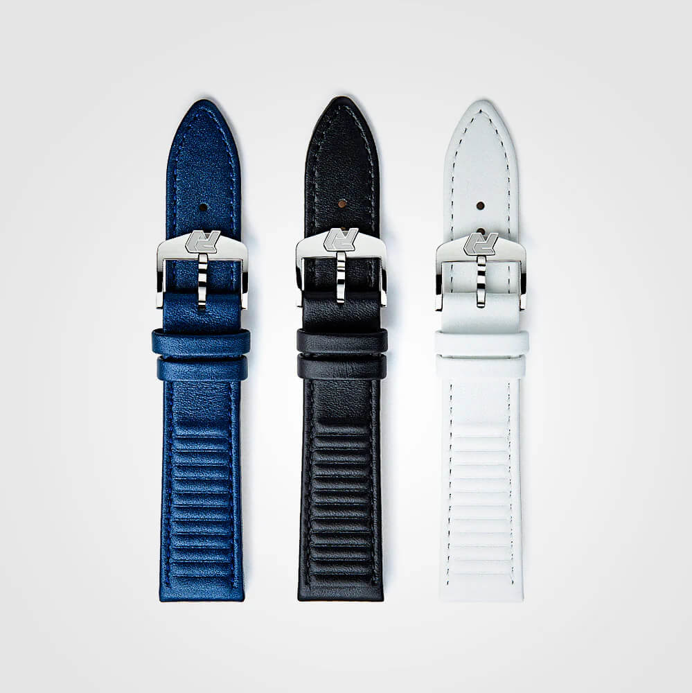
Final Words
Autodromo is one of those brands where you start out admiring the watches and end up falling in love with the entire ecosystem. The straps are not an afterthought, and they are not even just a complement. They are full participants in the design language of the brand.
What makes the whole thing work is that none of it feels like marketing. The colors, the textures, the buckles, the proprietary patterns, they all come from a real place, namely Bradley Price's lifelong obsession with vintage cars.
I don't care if you think I am super subjective here. Maybe I am. Maybe it's because when I first started getting into watches, Autodromo's design was one of the first I really noticed.
Those designs stuck with me in a way nothing else really did. I just think I saw something special there. And sure, there are plenty of brands out there that are more relevant, more talked about, doing objectively cool things. But honestly? I don't give a damn. I wanted to write about Autodromo.
To Autodromo: thank you for keeping things interesting, for keeping things colorful, for keeping the spirit of vintage motoring alive, and for caring about the details. Hats off to you.